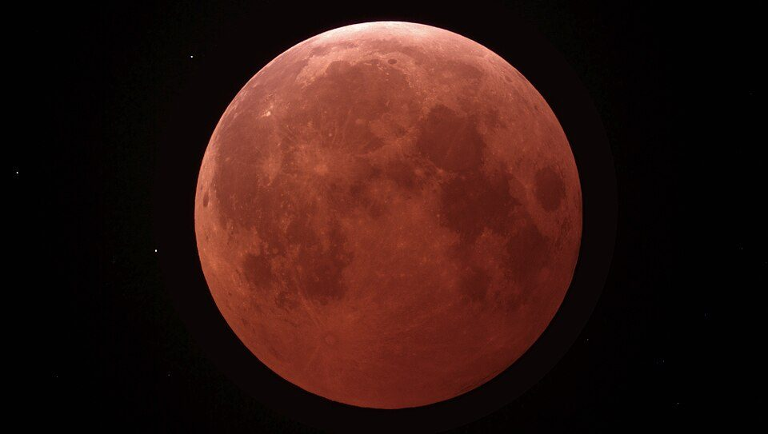

Eclipses
Por qué ocurren, cómo verlos sin riesgo y los grandes eclipses de España: el de agosto de 2026 y el de agosto de 2027.


Un eclipse ocurre cuando el Sol, la Tierra y la Luna se alinean. Es una coincidencia asombrosa: el Sol es unas 400 veces más grande que la Luna, pero también está unas 400 veces más lejos, así que en el cielo los dos parecen del mismo tamaño.
Eclipses de Sol
La Luna se interpone entre el Sol y la Tierra y su sombra cae sobre una franja de nuestro planeta. Solo pueden ocurrir en luna nueva.
- Total: la Luna tapa el Sol por completo. Durante unos minutos se hace casi de noche, baja la temperatura, aparecen estrellas y planetas y se ve la corona solar, la atmósfera exterior del Sol, como un halo plateado. Solo se ve dentro de una franja estrecha, de unos 100 a 250 km de ancho.
- Anular: la Luna está algo más lejos y no llega a tapar todo el Sol; queda un «anillo de fuego».
- Parcial: la Luna tapa solo una parte del Sol. Se ve en una zona mucho más amplia.
Eclipses de Luna
La Tierra se interpone entre el Sol y la Luna, y la Luna entra en nuestra sombra. Solo ocurren en luna llena y se ven desde toda la mitad de la Tierra donde es de noche. En un eclipse total la Luna no desaparece: se vuelve rojiza, porque la atmósfera terrestre desvía hacia ella la luz roja de todos los amaneceres y atardeceres del mundo. Por eso se habla de «luna de sangre». Se pueden mirar sin ninguna protección.


Cómo mirar un eclipse de Sol sin dañarte la vista
- Usa gafas de eclipse homologadas con la norma ISO 12312-2, sin rayas ni agujeros.
- No sirven las gafas de sol, los cristales ahumados, las radiografías ni los CD.
- Nunca mires con prismáticos, telescopio o cámara sin un filtro solar delante del objetivo: concentran la luz y causan lesiones en segundos.
- Un método seguro y sencillo: un proyector estenopeico, un agujero pequeño en un cartón que proyecta la imagen del Sol sobre el suelo. Los huecos entre las hojas de un árbol hacen lo mismo y llenan el suelo de pequeños soles mordidos.
- Solo durante la totalidad, cuando el Sol está completamente tapado, se puede mirar sin gafas. En cuanto reaparece el primer destello, hay que volver a ponérselas.
Los grandes eclipses de España
Después de más de un siglo sin un eclipse total en la península (el último fue en 1905), España vive una racha extraordinaria:
| Fecha | Tipo | Dónde se ve |
|---|---|---|
| 12 de agosto de 2026 | Total | Franja del norte y el este peninsular, de Galicia y Asturias a Aragón, la Comunidad Valenciana y Baleares, al atardecer |
| 2 de agosto de 2027 | Total | Sur de la península: Cádiz y Málaga, por el estrecho de Gibraltar. Hasta unos 4,5 minutos de totalidad en Tarifa |
| 26 de enero de 2028 | Anular | Franja del sur y el oeste peninsular, al atardecer |
El eclipse del 12 de agosto de 2026 ya ha pasado a la historia como el primero total visible en la península en 121 años: se produjo con el Sol muy bajo, poco antes de ponerse, y coincidió con el máximo de las Perseidas. El del 2 de agosto de 2027 será uno de los más largos del siglo: en Luxor (Egipto) durará más de seis minutos.
El ciclo de Saros
Los eclipses se repiten en ciclos de 18 años, 11 días y 8 horas, el llamado ciclo de Saros, conocido ya por los astrónomos babilonios. Por eso se pueden predecir con siglos de antelación y al segundo.
Vídeos para entenderlo mejor
- Los Eclipses para niños - Eclipse Solar y Eclipse Lunar - ¿Qué es un eclipse?Smile and Learn - Español · 4,3 M visualizaciones
- ¡Queda 1 Año para el Eclipse en España! TIENES que Verlo.QuantumFracture · 767 mil visualizaciones
Los vídeos son de YouTube y de sus autores. Se cargan solo al pulsar sobre ellos. Ver todos los vídeos →